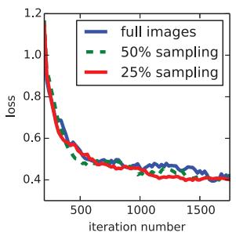
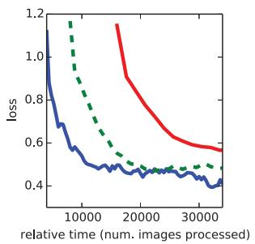

Fully Convolutional Networks for Semantic Segmentation
Jonathan Long∗ Evan Shelhamer∗ Trevor Darrell
UC Berkeley
jonlong,shelhamer,trevor @cs.berkeley.edu
Abstract
Convolutional networks are powerful visual models that yield hierarchies of features. We show that convolutional networks by themselves, trained end-to-end, pixelsto-pixels, exceed the state-of-the-art in semantic segmentation. Our key insight is to build “fully convolutional” networks that take input of arbitrary size and produce correspondingly-sized output with efficient inference and learning. We define and detail the space of fully convolutional networks, explain their application to spatially dense prediction tasks, and draw connections to prior models. We adapt contemporary classification networks (AlexNet [20], the VGG net [31], and GoogLeNet [32]) intofully convolutional networks and transfer their learned representations byfine-tuning [3] to the segmentation task. We then define a skip architecture that combines semantic information from a deep, coarse layer with appearance information from a shallow, fine layer to produce accurate and detailed segmentations. Ourfully convolutional network achieves stateof-the-art segmentation ofPASCAL VOC (20% relative improvement to 62.2% mean IU on 2012), NYUDv2, and SIFT Flow, while inference takes less than one fifth of a second for a typical image.
1. Introduction
Convolutional networks are driving advances in recognition. Convnets are not only improving for whole-image classification [20, 31, 32], but also making progress on local tasks with structured output. These include advances in bounding box object detection [29, 10, 17], part and keypoint prediction [39, 24], and local correspondence [24, 8].
The natural next step in the progression from coarse to fine inference is to make a prediction at every pixel. Prior approaches have used convnets for semantic segmentation [27, 2, 7, 28, 15, 13, 9], in which each pixel is labeled with the class of its enclosing object or region, but with shortcomings that this work addresses.

Figure 1. Fully convolutional networks can efficiently learn to make dense predictions for per-pixel tasks like semantic segmentation.
We show that a fully convolutional network (FCN) trained end-to-end, pixels-to-pixels on semantic segmentation exceeds the state-of-the-art without further machinery. To our knowledge, this is the first work to train FCNs end-to-end (1) for pixelwise prediction and (2) from supervised pre-training. Fully convolutional versions of existing networks predict dense outputs from arbitrary-sized inputs. Both learning and inference are performed whole-image-ata-time by dense feedforward computation and backpropagation. In-network upsampling layers enable pixelwise prediction and learning in nets with subsampled pooling.
This method is efficient, both asymptotically and absolutely, and precludes the need for the complications in other works. Patchwise training is common [27, 2, 7, 28, 9], but lacks the efficiency of fully convolutional training. Our approach does not make use of pre- and post-processing complications, including superpixels [7, 15], proposals [15, 13], or post-hoc refinement by random fields or local classifiers [7, 15]. Our model transfers recent success in classification [20, 31, 32] to dense prediction by reinterpreting classification nets as fully convolutional and fine-tuning from their learned representations. In contrast, previous works have applied small convnets without supervised pre-training [7, 28, 27].
Semantic segmentation faces an inherent tension between semantics and location: global information resolves what while local information resolves where. Deep feature hierarchies encode location and semantics in a nonlinear local-to-global pyramid. We define a skip architecture to take advantage of this feature spectrum that combines deep, coarse, semantic information and shallow, fine, appearance information in Section 4.2 (see Figure 3).
In the next section, we review related work on deep classification nets, FCNs, and recent approaches to semantic segmentation using convnets. The following sections explain FCN design and dense prediction tradeoffs, introduce our architecture with in-network upsampling and multilayer combinations, and describe our experimental framework. Finally, we demonstrate state-of-the-art results on PASCAL VOC 2011-2, NYUDv2, and SIFT Flow.
2. Related work
Our approach draws on recent successes of deep nets for image classification [20, 31, 32] and transfer learning [3, 38]. Transfer was first demonstrated on various visual recognition tasks [3, 38], then on detection, and on both instance and semantic segmentation in hybrid proposalclassifier models [10, 15, 13]. We now re-architect and finetune classification nets to direct, dense prediction of semantic segmentation. We chart the space of FCNs and situate prior models, both historical and recent, in this framework.
Fully convolutional networks To our knowledge, the idea of extending a convnet to arbitrary-sized inputs first appeared in Matan et al. [26], which extended the classic LeNet [21] to recognize strings of digits. Because their net was limited to one-dimensional input strings, Matan et al. used Viterbi decoding to obtain their outputs. Wolf and Platt [37] expand convnet outputs to 2-dimensional maps of detection scores for the four corners of postal address blocks. Both of these historical works do inference and learning fully convolutionally for detection. Ning et al. [27] define a convnet for coarse multiclass segmentation of C. elegans tissues with fully convolutional inference.
Fully convolutional computation has also been exploited in the present era of many-layered nets. Sliding window detection by Sermanet et al. [29], semantic segmentation by Pinheiro and Collobert [28], and image restoration by Eigen et al. [4] do fully convolutional inference. Fully convolutional training is rare, but used effectively by Tompson et al. [35] to learn an end-to-end part detector and spatial model for pose estimation, although they do not exposit on or analyze this method.
Alternatively, He et al. [17] discard the nonconvolutional portion of classification nets to make a feature extractor. They combine proposals and spatial pyramid pooling to yield a localized, fixed-length feature for classification. While fast and effective, this hybrid model cannot be learned end-to-end.
Dense prediction with convnets Several recent works have applied convnets to dense prediction problems, including semantic segmentation by Ning et al. [27], Farabet et al.
[7], and Pinheiro and Collobert [28]; boundary prediction for electron microscopy by Ciresan et al. [2] and for natural images by a hybrid convnet/nearest neighbor model by Ganin and Lempitsky [9]; and image restoration and depth estimation by Eigen et al. [4, 5]. Common elements of these approaches include
small models restricting capacity and receptive fields;
patchwise training [27, 2, 7, 28, 9];
post-processing by superpixel projection, random field regularization, filtering, or local classification [7, 2, 9];
input shifting and output interlacing for dense output [29, 28, 9];
multi-scale pyramid processing [7, 28, 9];
saturating tanh nonlinearities [7, 4, 28]; and
ensembles [2, 9],
whereas our method does without this machinery. However, we do study patchwise training 3.4 and “shift-and-stitch” dense output 3.2 from the perspective of FCNs. We also discuss in-network upsampling 3.3, of which the fully connected prediction by Eigen et al. [5] is a special case.
Unlike these existing methods, we adapt and extend deep classification architectures, using image classification as supervised pre-training, and fine-tune fully convolutionally to learn simply and efficiently from whole image inputs and whole image ground thruths.
Hariharan et al. [15] and Gupta et al. [13] likewise adapt deep classification nets to semantic segmentation, but do so in hybrid proposal-classifier models. These approaches fine-tune an R-CNN system [10] by sampling bounding boxes and/or region proposals for detection, semantic segmentation, and instance segmentation. Neither method is learned end-to-end. They achieve state-of-the-art segmentation results on PASCAL VOC and NYUDv2 respectively, so we directly compare our standalone, end-to-end FCN to their semantic segmentation results in Section 5.
We fuse features across layers to define a nonlinear localto-global representation that we tune end-to-end. In contemporary work Hariharan et al. [16] also use multiple layers in their hybrid model for semantic segmentation.
3. Fully convolutional networks
Each layer of data in a convnet is a three-dimensional array of size , where h and w are spatial dimensions, and d is the feature or channel dimension. The first layer is the image, with pixel size , and d color channels. Locations in higher layers correspond to the locations in the image they are path-connected to, which are called their receptive fields.
Convnets are built on translation invariance. Their basic components (convolution, pooling, and activation functions) operate on local input regions, and depend only on relative spatial coordinates. Writing for the data vector at location in a particular layer, and for the following layer, these functions compute outputs by
where k is called the kernel size, s is the stride or subsampling factor, and determines the layer type: a matrix multiplication for convolution or average pooling, a spatial max for max pooling, or an elementwise nonlinearity for an activation function, and so on for other types of layers.
This functional form is maintained under composition, with kernel size and stride obeying the transformation rule
While a general deep net computes a general nonlinear function, a net with only layers of this form computes a nonlinearfilter, which we call a deepfilter orfully convolutional network. An FCN naturally operates on an input of any size, and produces an output of corresponding (possibly resampled) spatial dimensions.
A real-valued loss function composed with an FCN defines a task. If the loss function is a sum over the spatial dimensions of the final layer, , its gradient will be a sum over the gradients of each of its spatial components. Thus stochastic gradient descent on - computed on whole images will be the same as stochastic gradient descent on taking all of the final layer receptive fields as a minibatch.
When these receptive fields overlap significantly, both feedforward computation and backpropagation are much more efficient when computed layer-by-layer over an entire image instead of independently patch-by-patch.
We next explain how to convert classification nets into fully convolutional nets that produce coarse output maps. For pixelwise prediction, we need to connect these coarse outputs back to the pixels. Section 3.2 describes a trick, fast scanning [11], introduced for this purpose. We gain insight into this trick by reinterpreting it as an equivalent network modification. As an efficient, effective alternative, we introduce deconvolution layers for upsampling in Section 3.3. In Section 3.4 we consider training by patchwise sampling, and give evidence in Section 4.3 that our whole image training is faster and equally effective.
3.1. Adapting classifiers for dense prediction
Typical recognition nets, including LeNet [21], AlexNet [20], and its deeper successors [31, 32], ostensibly take fixed-sized inputs and produce non-spatial outputs. The fully connected layers of these nets have fixed dimensions and throw away spatial coordinates. However, these fully connected layers can also be viewed as convolutions with kernels that cover their entire input regions. Doing so casts them into fully convolutional networks that take input of any size and output classification maps. This transformation is illustrated in Figure 2.

Figure 2. Transforming fully connected layers into convolution layers enables a classification net to output a heatmap. Adding layers and a spatial loss (as in Figure 1) produces an efficient machine for end-to-end dense learning.
Furthermore, while the resulting maps are equivalent to the evaluation of the original net on particular input patches, the computation is highly amortized over the overlapping regions of those patches. For example, while AlexNet takes 1.2 ms (on a typical GPU) to infer the classification scores of a 227 227 image, the fully convolutional net takes 22 ms to produce a 10 10 grid of outputs from a 500 500 image, which is more than 5 times faster than the na¨ıve approach1.
The spatial output maps of these convolutionalized models make them a natural choice for dense problems like semantic segmentation. With ground truth available at every output cell, both the forward and backward passes are straightforward, and both take advantage of the inherent computational efficiency (and aggressive optimization) of convolution. The corresponding backward times for the AlexNet example are 2.4 ms for a single image and ms for a fully convolutional output map, resulting in a speedup similar to that of the forward pass.
While our reinterpretation of classification nets as fully convolutional yields output maps for inputs of any size, the output dimensions are typically reduced by subsampling. The classification nets subsample to keep filters small and computational requirements reasonable. This coarsens the output of a fully convolutional version of these nets, reducing it from the size of the input by a factor equal to the pixel stride of the receptive fields of the output units.
3.2. Shift-and-stitch is filter rarefaction
Dense predictions can be obtained from coarse outputs by stitching together output from shifted versions of the input. If the output is downsampled by a factor of shift the input x pixels to the right and y pixels down, once for every . Process each of these inputs, and interlace the outputs so that the predictions correspond to the pixels at the centers of their receptive fields.
Although performing this transformation na¨ıvely increases the cost by a factor of , there is a well-known trick for efficiently producing identical results [11, 29] known to the wavelet community as the a trous algorithm [` 25]. Consider a layer (convolution or pooling) with input stride and a subsequent convolution layer with filter weights (eliding the irrelevant feature dimensions). Setting the lower layer’s input stride to 1 upsamples its output by a factor of s. However, convolving the original filter with the upsampled output does not produce the same result as shift-and-stitch, because the original filter only sees a reduced portion of its (now upsampled) input. To reproduce the trick, rarefy the filter by enlarging it as
(with i and zero-based). Reproducing the full net output of the trick involves repeating this filter enlargement layerby-layer until all subsampling is removed. (In practice, this can be done efficiently by processing subsampled versions of the upsampled input.)
Decreasing subsampling within a net is a tradeoff: the filters see finer information, but have smaller receptive fields and take longer to compute. The shift-and-stitch trick is another kind of tradeoff: the output is denser without decreasing the receptive field sizes of the filters, but the filters are prohibited from accessing information at a finer scale than their original design.
Although we have done preliminary experiments with this trick, we do not use it in our model. We find learning through upsampling, as described in the next section, to be more effective and efficient, especially when combined with the skip layer fusion described later on.
3.3. Upsampling is backwards strided convolution
Another way to connect coarse outputs to dense pixels is interpolation. For instance, simple bilinear interpolation computes each output from the nearest four inputs by a linear map that depends only on the relative positions of the input and output cells.
In a sense, upsampling with factor f is convolution with a fractional input stride of . So long as is integral, a natural way to upsample is therefore backwards convolution (sometimes called deconvolution) with an output stride of f. Such an operation is trivial to implement, since it simply reverses the forward and backward passes of convolution. Thus upsampling is performed in-network for end-to-end learning by backpropagation from the pixelwise loss.
Note that the deconvolution filter in such a layer need not be fixed (e.g., to bilinear upsampling), but can be learned. A stack of deconvolution layers and activation functions can even learn a nonlinear upsampling.
In our experiments, we find that in-network upsampling is fast and effective for learning dense prediction. Our best segmentation architecture uses these layers to learn to upsample for refined prediction in Section 4.2.
3.4. Patchwise training is loss sampling
In stochastic optimization, gradient computation is driven by the training distribution. Both patchwise training and fully convolutional training can be made to produce any distribution, although their relative computational efficiency depends on overlap and minibatch size. Whole image fully convolutional training is identical to patchwise training where each batch consists of all the receptive fields of the units below the loss for an image (or collection of images). While this is more efficient than uniform sampling of patches, it reduces the number of possible batches. However, random selection of patches within an image may be recovered simply. Restricting the loss to a randomly sampled subset of its spatial terms (or, equivalently applying a DropConnect mask [36] between the output and the loss) excludes patches from the gradient computation.
If the kept patches still have significant overlap, fully convolutional computation will still speed up training. If gradients are accumulated over multiple backward passes, batches can include patches from several images.2
Sampling in patchwise training can correct class imbalance [27, 7, 2] and mitigate the spatial correlation of dense patches [28, 15]. In fully convolutional training, class balance can also be achieved by weighting the loss, and loss sampling can be used to address spatial correlation.
We explore training with sampling in Section 4.3, and do not find that it yields faster or better convergence for dense prediction. Whole image training is effective and efficient.
4. Segmentation Architecture
We cast ILSVRC classifiers into FCNs and augment them for dense prediction with in-network upsampling and a pixelwise loss. We train for segmentation by fine-tuning. Next, we add skips between layers to fuse coarse, semantic and local, appearance information. This skip architecture is learned end-to-end to refine the semantics and spatial precision of the output.
For this investigation, we train and validate on the PAS-CAL VOC 2011 segmentation challenge [6]. We train with a per-pixel multinomial logistic loss and validate with the standard metric of mean pixel intersection over union, with the mean taken over all classes, including background. The training ignores pixels that are masked out (as ambiguous or difficult) in the ground truth.

Figure 3. Our DAG nets learn to combine coarse, high layer information with fine, low layer information. Pooling and prediction layers are shown as grids that reveal relative spatial coarseness, while intermediate layers are shown as vertical lines. First row (FCN-32s): Our singlestream net, described in Section 4.1, upsamples stride 32 predictions back to pixels in a single step. Second row (FCN-16s): Combining predictions from both the final layer and the pool4 layer, at stride 16, lets our net predict finer details, while retaining high-level semantic information. Third row (FCN-8s): Additional predictions from pool3, at stride 8, provide further precision.
4.1. From classifier to dense FCN
We begin by convolutionalizing proven classification architectures as in Section 3. We consider the AlexNet3 architecture [20] that won ILSVRC12, as well as the VGG nets [31] and the GoogLeNet4 [32] which did exceptionally well in ILSVRC14. We pick the VGG 16-layer net5, which we found to be equivalent to the 19-layer net on this task. For GoogLeNet, we use only the final loss layer, and improve performance by discarding the final average pooling layer. We decapitate each net by discarding the final classifier layer, and convert all fully connected layers to convolutions. We append a 1 1 convolution with channel dimension 21 to predict scores for each of the PAS-CAL classes (including background) at each of the coarse output locations, followed by a deconvolution layer to bilinearly upsample the coarse outputs to pixel-dense outputs as described in Section 3.3. Table 1 compares the preliminary validation results along with the basic characteristics of each net. We report the best results achieved after convergence at a fixed learning rate (at least 175 epochs).
Fine-tuning from classification to segmentation gave reasonable predictions for each net. Even the worst model achieved 75% of state-of-the-art performance. The segmentation-equipped VGG net (FCN-VGG16) already
Table 1. We adapt and extend three classification convnets. We compare performance by mean intersection over union on the validation set of PASCAL VOC 2011 and by inference time (averaged over 20 trials for a 500 500 input on an NVIDIA Tesla K40c). We detail the architecture of the adapted nets with regard to dense prediction: number of parameter layers, receptive field size of output units, and the coarsest stride within the net. (These numbers give the best performance obtained at a fixed learning rate, not best performance possible.)
| FCN- AlexNet | FCN- VGG16 | FCN- GoogLeNet4 | |
| mean IU | 39.8 | 56.0 | 42.5 |
| forward time | 50 ms | 210 ms | 59 ms |
| conv. layers | 8 | 16 | 22 |
| parameters | 57M | 134M | 6M |
| rf size | 355 | 404 | 907 |
| max stride | 32 | 32 | 32 |
appears to be state-of-the-art at 56.0 mean IU on val, compared to 52.6 on test [15]. Training on extra data raises FCN-VGG16 to 59.4 mean IU and FCN-AlexNet to 48.0 mean IU on a subset of val7. Despite similar classification accuracy, our implementation of GoogLeNet did not match the VGG16 segmentation result.
4.2. Combining what and where
We define a new fully convolutional net (FCN) for segmentation that combines layers of the feature hierarchy and refines the spatial precision of the output. See Figure 3.
While fully convolutionalized classifiers can be finetuned to segmentation as shown in 4.1, and even score highly on the standard metric, their output is dissatisfyingly coarse (see Figure 4). The 32 pixel stride at the final prediction layer limits the scale of detail in the upsampled output.
We address this by adding skips [1] that combine the final prediction layer with lower layers with finer strides. This turns a line topology into a DAG, with edges that skip ahead from lower layers to higher ones (Figure 3). As they see fewer pixels, the finer scale predictions should need fewer layers, so it makes sense to make them from shallower net outputs. Combining fine layers and coarse layers lets the model make local predictions that respect global structure. By analogy to the jet of Koenderick and van Doorn [19], we call our nonlinear feature hierarchy the deep jet.
We first divide the output stride in half by predicting from a 16 pixel stride layer. We add a 1 1 convolution layer on top of pool4 to produce additional class predictions. We fuse this output with the predictions computed on top of conv7 (convolutionalized fc7) at stride 32 by adding a 2 upsampling layer and summing6 both predictions (see Figure 3). We initialize the 2 upsampling to bilinear interpolation, but allow the parameters to be learned as described in Section 3.3. Finally, the stride 16 predictions are upsampled back to the image. We call this net FCN-16s. FCN-16s is learned end-to-end, initialized with the parameters of the last, coarser net, which we now call FCN-32s. The new parameters acting on pool4 are zeroinitialized so that the net starts with unmodified predictions. The learning rate is decreased by a factor of 100.
Learning this skip net improves performance on the validation set by 3.0 mean IU to 62.4. Figure 4 shows improvement in the fine structure of the output. We compared this fusion with learning only from the pool4 layer, which resulted in poor performance, and simply decreasing the learning rate without adding the skip, which resulted in an insignificant performance improvement without improving the quality of the output.
We continue in this fashion by fusing predictions from pool3 with a 2 upsampling of predictions fused from pool4 and conv7, building the net FCN-8s. We obtain a minor additional improvement to 62.7 mean IU, and find a slight improvement in the smoothness and detail of our output. At this point our fusion improvements have met diminishing returns, both with respect to the IU metric which emphasizes large-scale correctness, and also in terms of the improvement visible e.g. in Figure 4, so we do not continue fusing even lower layers.
Refinement by other means Decreasing the stride of pooling layers is the most straightforward way to obtain finer predictions. However, doing so is problematic for our VGG16-based net. Setting the pool5 stride to 1 requires our convolutionalized fc6 to have kernel size 14 14 to maintain its receptive field size. In addition to their computational cost, we had difficulty learning such large filters. We attempted to re-architect the layers above pool5 with smaller filters, but did not achieve comparable performance; one possible explanation is that the ILSVRC initialization of the upper layers is important.
FCN-16s
FCN-8s

Figure 4. Refining fully convolutional nets by fusing information from layers with different strides improves segmentation detail. The first three images show the output from our 32, 16, and 8 pixel stride nets (see Figure 3).
Table 2. Comparison of skip FCNs on a subset7 of PASCAL VOC 2011 segval. Learning is end-to-end, except for FCN-32s-fixed, where only the last layer is fine-tuned. Note that FCN-32s is FCN-VGG16, renamed to highlight stride.
| pixel acc. | mean acc. | mean IU | f.w. IU | |
| FCN-32s-fixed | 83.0 | 59.7 | 45.4 | 72.0 |
| FCN-32s | 89.1 | 73.3 | 59.4 | 81.4 |
| FCN-16s | 90.0 | 75.7 | 62.4 | 83.0 |
| FCN-8s | 90.3 | 75.9 | 62.7 | 83.2 |
Another way to obtain finer predictions is to use the shiftand-stitch trick described in Section 3.2. In limited experiments, we found the cost to improvement ratio from this method to be worse than layer fusion.
4.3. Experimental framework
Optimization We train by SGD with momentum. We use a minibatch size of 20 images and fixed learning rates of 10−3, 10−4, and 5−5 for FCN-AlexNet, FCN-VGG16, and FCN-GoogLeNet, respectively, chosen by line search. We use momentum 0.9, weight decay of or , and doubled learning rate for biases, although we found training to be sensitive to the learning rate alone. We zero-initialize the class scoring layer, as random initialization yielded neither better performance nor faster convergence. Dropout was included where used in the original classifier nets.
Fine-tuning We fine-tune all layers by backpropagation through the whole net. Fine-tuning the output classifier alone yields only 70% of the full finetuning performance as compared in Table 2. Training from scratch is not feasible considering the time required to learn the base classification nets. (Note that the VGG net is trained in stages, while we initialize from the full 16-layer version.) Fine-tuning takes three days on a single GPU for the coarse FCN-32s version, and about one day each to upgrade to the FCN-16s and FCN-8s versions.


Figure 5. Training on whole images is just as effective as sampling patches, but results in faster (wall time) convergence by making more efficient use of data. Left shows the effect of sampling on convergence rate for a fixed expected batch size, while right plots the same by relative wall time.
More Training Data The PASCAL VOC 2011 segmentation training set labels 1112 images. Hariharan et al. [14] collected labels for a larger set of 8498 PASCAL training images, which was used to train the previous state-of-theart system, SDS [15]. This training data improves the FCN-VGG16 validation score7 by 3.4 points to 59.4 mean IU.
Patch Sampling As explained in Section 3.4, our full image training effectively batches each image into a regular grid of large, overlapping patches. By contrast, prior work randomly samples patches over a full dataset [27, 2, 7, 28, 9], potentially resulting in higher variance batches that may accelerate convergence [22]. We study this tradeoff by spatially sampling the loss in the manner described earlier, making an independent choice to ignore each final layer cell with some probability To avoid changing the effective batch size, we simultaneously increase the number of images per batch by a factor . Note that due to the efficiency of convolution, this form of rejection sampling is still faster than patchwise training for large enough values of ., at least for according to the numbers in Section 3.1). Figure 5 shows the effect of this form of sampling on convergence. We find that sampling does not have a significant effect on convergence rate compared to whole image training, but takes significantly more time due to the larger number of images that need to be considered per batch. We therefore choose unsampled, whole image training in our other experiments.
Class Balancing Fully convolutional training can balance classes by weighting or sampling the loss. Although our labels are mildly unbalanced (about 3/4 are background), we find class balancing unnecessary.
Dense Prediction The scores are upsampled to the input dimensions by deconvolution layers within the net. Final layer deconvolutional filters are fixed to bilinear interpolation, while intermediate upsampling layers are initialized to bilinear upsampling, and then learned.
Augmentation We tried augmenting the training data by randomly mirroring and “jittering” the images by translating them up to 32 pixels (the coarsest scale of prediction) in each direction. This yielded no noticeable improvement.
Implementation All models are trained and tested with Caffe [18] on a single NVIDIA Tesla K40c. Our models and code are publicly available at http://fcn.berkeleyvision.org.
5. Results
We test our FCN on semantic segmentation and scene parsing, exploring PASCAL VOC, NYUDv2, and SIFT Flow. Although these tasks have historically distinguished between objects and regions, we treat both uniformly as pixel prediction. We evaluate our FCN skip architecture on each of these datasets, and then extend it to multi-modal input for NYUDv2 and multi-task prediction for the semantic and geometric labels of SIFT Flow.
Metrics We report four metrics from common semantic segmentation and scene parsing evaluations that are variations on pixel accuracy and region intersection over union (IU). Let be the number of pixels of class i predicted to belong to class where there are different classes, and let be the total number of pixels of class i. We compute:
• pixel accuracy:
mean accuraccy:
mean IU: $\begin{array} { r } { ( 1 / n _ { \mathrm { c l } } ) \sum _ { i } n _ { i i } / \left( t _ { i } + \sum _ { j } n _ { j i } - n _ { i i } \right) } \end{array}$
frequency weighted IU:
PASCAL VOC Table 3 gives the performance of our FCN-8s on the test sets of PASCAL VOC 2011 and 2012, and compares it to the previous state-of-the-art, SDS [15], and the well-known R-CNN [10]. We achieve the best results on mean by a relative margin of 20%. Inference time is reduced 114 (convnet only, ignoring proposals and refinement) or 286 (overall).
Table 3. Our fully convolutional net gives a 20% relative improvement over the state-of-the-art on the PASCAL VOC 2011 and 2012 test sets and reduces inference time.
| mean IU VOC2011 test | mean IU VOC2012 test | inference time | |
| R-CNN [10] | 47.9 | ||
| SDS [15] | 52.6 | 51.6 | |
| FCN-8s | 62.7 | 62.2 | ~ 175 ms |
NYUDv2 [30] is an RGB-D dataset collected using the
Table 4. Results on NYUDv2. RGBD is early-fusion of the RGB and depth channels at the input. HHA is the depth embedding of [13] as horizontal disparity, height above ground, and the angle of the local surface normal with the inferred gravity direction. RGB-HHA is the jointly trained late fusion model that sums RGB and HHA predictions.
| pixel acc. | mean acc. | mean IU | f.w. IU | |
| Gupta et al. [13] FCN-32s RGB FCN-32s RGBD FCN-32s HHA | 60.3 | 28.6 | 47.0 | |
| 60.0 | 42.2 | 29.2 | 43.9 | |
| 61.5 | 42.4 | 30.5 | 45.5 | |
| 57.1 | 35.2 | 24.2 | 40.4 | |
| 64.3 | 44.9 | 32.8 | 48.0 | |
| FCN-32s RGB-HHA FCN-16s RGB-HHA | 65.4 | 46.1 | 34.0 | 49.5 |
Microsoft Kinect. It has 1449 RGB-D images, with pixelwise labels that have been coalesced into a 40 class semantic segmentation task by Gupta et al. [12]. We report results on the standard split of 795 training images and 654 testing images. (Note: all model selection is performed on PAS-CAL 2011 val.) Table 4 gives the performance of our model in several variations. First we train our unmodified coarse model (FCN-32s) on RGB images. To add depth information, we train on a model upgraded to take four-channel RGB-D input (early fusion). This provides little benefit, perhaps due to the difficultly of propagating meaningful gradients all the way through the model. Following the success of Gupta et al. [13], we try the three-dimensional HHA encoding of depth, training nets on just this information, as well as a “late fusion” of RGB and HHA where the predictions from both nets are summed at the final layer, and the resulting two-stream net is learned end-to-end. Finally we upgrade this late fusion net to a 16-stride version.
SIFT Flow is a dataset of 2,688 images with pixel labels for 33 semantic categories (“bridge”, “mountain”, “sun”), as well as three geometric categories (“horizontal”, “vertical”, and “sky”). An FCN can naturally learn a joint representation that simultaneously predicts both types of labels. We learn a two-headed version of FCN-16s with semantic and geometric prediction layers and losses. The learned model performs as well on both tasks as two independently trained models, while learning and inference are essentially as fast as each independent model by itself. The results in Table 5, computed on the standard split into 2,488 training and 200 test images,9 show state-of-the-art performance on both tasks.
6. Conclusion
Fully convolutional networks are a rich class of models, of which modern classification convnets are a special case. Recognizing this, extending these classification nets to segmentation, and improving the architecture with multi-resolution layer combinations dramatically improves the state-of-the-art, while simultaneously simplifying and speeding up learning and inference.
Table 5. Results on SIFT Flow9 with class segmentation (center) and geometric segmentation (right). Tighe [33] is a non-parametric transfer method. Tighe 1 is an exemplar SVM while 2 is SVM + MRF. Farabet is a multi-scale convnet trained on class-balanced samples (1) or natural frequency samples (2). Pinheiro is a multi-scale, recurrent convnet, denoted RCNN3 ( 3). The metric for geometry is pixel accuracy.
| pixel acc. | mean acc. | mean IU | f.w. IU | geom. acc. | |
| Liu et al. [23] | 76.7 | = | 一 | 1 | |
| Tighe et al. [33] | 90.8 | ||||
| Tighe et al. [34] 1 | 75.6 | 41.1 | |||
| Tighe et al. [34] 2 | 78.6 | 39.2 | |||
| Farabet et al. [7] 1 | 72.3 | 50.8 | |||
| Farabet et al. [7] 2 | 78.5 | 29.6 | |||
| Pinheiro et al. [28] | 77.7 | 29.8 | |||
| FCN-16s | 85.2 | 51.7 | 39.5 | 76.1 | 94.3 |
FCN-8s
SDS [15]
Ground Truth
Image

Figure 6. Fully convolutional segmentation nets produce stateof-the-art performance on PASCAL. The left column shows the output of our highest performing net, FCN-8s. The second shows the segmentations produced by the previous state-of-the-art system by Hariharan et al. [15]. Notice the fine structures recovered (first row), ability to separate closely interacting objects (second row), and robustness to occluders (third row). The fourth row shows a failure case: the net sees lifejackets in a boat as people.
Acknowledgements This work was supported in part by DARPA’s MSEE and SMISC programs, NSF awards IIS-1427425, IIS-1212798, IIS-1116411, and the NSF GRFP, Toyota, and the Berkeley Vision and Learning Center. We gratefully acknowledge NVIDIA for GPU donation. We thank Bharath Hariharan and Saurabh Gupta for their advice and dataset tools. We thank Sergio Guadarrama for reproducing GoogLeNet in Caffe. We thank Jitendra Malik for his helpful comments. Thanks to Wei Liu for pointing out an issue wth our SIFT Flow mean IU computation and an error in our frequency weighted mean IU formula.
References
[1] C. M. Bishop. Pattern recognition and machine learning, page 229. Springer-Verlag New York, 2006. 6
[2] D. C. Ciresan, A. Giusti, L. M. Gambardella, and J. Schmidhuber. Deep neural networks segment neuronal membranes in electron microscopy images. In NIPS, pages 2852–2860, 2012. 1, 2, 4, 7
[3] J. Donahue, Y. Jia, O. Vinyals, J. Hoffman, N. Zhang, E. Tzeng, and T. Darrell. DeCAF: A deep convolutional activation feature for generic visual recognition. In ICML, 2014. 1, 2
[4] D. Eigen, D. Krishnan, and R. Fergus. Restoring an image taken through a window covered with dirt or rain. In Computer Vision (ICCV), 2013 IEEE International Conference on, pages 633–640. IEEE, 2013. 2
[5] D. Eigen, C. Puhrsch, and R. Fergus. Depth map prediction from a single image using a multi-scale deep network. arXiv preprint arXiv:1406.2283, 2014. 2
[6] M. Everingham, L. Van Gool, C. K. I. Williams, J. Winn, and A. Zisserman. The PASCAL Visual Object Classes Challenge 2011 (VOC2011) Results. http://www.pascalnetwork.org/challenges/VOC/voc2011/workshop/index.html. 4
[7] C. Farabet, C. Couprie, L. Najman, and Y. LeCun. Learning hierarchical features for scene labeling. Pattern Analysis and Machine Intelligence, IEEE Transactions on, 2013. 1, 2, 4, 7, 8
[8] P. Fischer, A. Dosovitskiy, and T. Brox. Descriptor matching with convolutional neural networks: a comparison to SIFT. CoRR, abs/1405.5769, 2014. 1
[9] Y. Ganin and V. Lempitsky. N4-fields: Neural network nearest neighbor fields for image transforms. In ACCV, 2014. 1, 2, 7
[10] R. Girshick, J. Donahue, T. Darrell, and J. Malik. Rich feature hierarchies for accurate object detection and semantic segmentation. In Computer Vision and Pattern Recognition, 2014. 1, 2, 7
[11] A. Giusti, D. C. Cires¸an, J. Masci, L. M. Gambardella, and J. Schmidhuber. Fast image scanning with deep max-pooling convolutional neural networks. In ICIP, 2013. 3, 4
[12] S. Gupta, P. Arbelaez, and J. Malik. Perceptual organization and recognition of indoor scenes from RGB-D images. In CVPR, 2013. 8
[13] S. Gupta, R. Girshick, P. Arbelaez, and J. Malik. Learning rich features from RGB-D images for object detection and segmentation. In ECCV. Springer, 2014. 1, 2, 8
[14] B. Hariharan, P. Arbelaez, L. Bourdev, S. Maji, and J. Malik. Semantic contours from inverse detectors. In International Conference on Computer Vision (ICCV), 2011. 7
[15] B. Hariharan, P. Arbelaez, R. Girshick, and J. Malik. Simul-´ taneous detection and segmentation. In European Conference on Computer Vision (ECCV), 2014. 1, 2, 4, 5, 7, 8
[16] B. Hariharan, P. Arbelaez, R. Girshick, and J. Malik. Hy-´ percolumns for object segmentation and fine-grained localization. In Computer Vision and Pattern Recognition, 2015. 2
[17] K. He, X. Zhang, S. Ren, and J. Sun. Spatial pyramid pooling in deep convolutional networks for visual recognition. In ECCV, 2014. 1, 2
[18] Y. Jia, E. Shelhamer, J. Donahue, S. Karayev, J. Long, R. Girshick, S. Guadarrama, and T. Darrell. Caffe: Convolutional architecture for fast feature embedding. arXiv preprint arXiv:1408.5093, 2014. 7
[19] J. J. Koenderink and A. J. van Doorn. Representation of local geometry in the visual system. Biological cybernetics, 55(6):367–375, 1987. 6
[20] A. Krizhevsky, I. Sutskever, and G. E. Hinton. Imagenet classification with deep convolutional neural networks. In NIPS, 2012. 1, 2, 3, 5
[21] Y. LeCun, B. Boser, J. Denker, D. Henderson, R. E. Howard, W. Hubbard, and L. D. Jackel. Backpropagation applied to hand-written zip code recognition. In Neural Computation, 1989. 2, 3
[22] Y. A. LeCun, L. Bottou, G. B. Orr, and K.-R. Muller. Ef- ¨ ficient backprop. In Neural networks: Tricks of the trade, pages 9–48. Springer, 1998. 7
[23] C. Liu, J. Yuen, and A. Torralba. Sift flow: Dense correspondence across scenes and its applications. Pattern Analysis and Machine Intelligence, IEEE Transactions on, 33(5):978– 994, 2011. 8
[24] J. Long, N. Zhang, and T. Darrell. Do convnets learn correspondence? In NIPS, 2014. 1
[25] S. Mallat. A wavelet tour of signal processing. Academic press, 2nd edition, 1999. 4
[26] O. Matan, C. J. Burges, Y. LeCun, and J. S. Denker. Multidigit recognition using a space displacement neural network. In NIPS, pages 488–495. Citeseer, 1991. 2
[27] F. Ning, D. Delhomme, Y. LeCun, F. Piano, L. Bottou, and P. E. Barbano. Toward automatic phenotyping of developing embryos from videos. Image Processing, IEEE Transactions on, 14(9):1360–1371, 2005. 1, 2, 4, 7
[28] P. H. Pinheiro and R. Collobert. Recurrent convolutional neural networks for scene labeling. In ICML, 2014. 1, 2, 4, 7, 8
[29] P. Sermanet, D. Eigen, X. Zhang, M. Mathieu, R. Fergus, and Y. LeCun. Overfeat: Integrated recognition, localization and detection using convolutional networks. In ICLR, 2014. 1, 2, 4
[30] N. Silberman, D. Hoiem, P. Kohli, and R. Fergus. Indoor segmentation and support inference from rgbd images. In ECCV, 2012. 7
[31] K. Simonyan and A. Zisserman. Very deep convolutional networks for large-scale image recognition. CoRR, abs/1409.1556, 2014. 1, 2, 3, 5
[32] C. Szegedy, W. Liu, Y. Jia, P. Sermanet, S. Reed, D. Anguelov, D. Erhan, V. Vanhoucke, and A. Rabinovich.
Going deeper with convolutions. CoRR, abs/1409.4842, 2014. 1, 2, 3, 5
[33] J. Tighe and S. Lazebnik. Superparsing: scalable nonparametric image parsing with superpixels. In ECCV, pages 352– 365. Springer, 2010. 8
[34] J. Tighe and S. Lazebnik. Finding things: Image parsing with regions and per-exemplar detectors. In CVPR, 2013. 8
[35] J. Tompson, A. Jain, Y. LeCun, and C. Bregler. Joint training of a convolutional network and a graphical model for human pose estimation. CoRR, abs/1406.2984, 2014. 2
[36] L. Wan, M. Zeiler, S. Zhang, Y. L. Cun, and R. Fergus. Regularization of neural networks using dropconnect. In Proceedings of the 30th International Conference on Machine Learning (ICML-13), pages 1058–1066, 2013. 4
[37] R. Wolf and J. C. Platt. Postal address block location using a convolutional locator network. Advances in Neural Information Processing Systems, pages 745–745, 1994. 2
[38] M. D. Zeiler and R. Fergus. Visualizing and understanding convolutional networks. In Computer Vision–ECCV 2014, pages 818–833. Springer, 2014. 2
[39] N. Zhang, J. Donahue, R. Girshick, and T. Darrell. Partbased r-cnns for fine-grained category detection. In Computer Vision–ECCV 2014, pages 834–849. Springer, 2014. 1
md/2015_Fully_convolutional_networks_for_semantic_segmentation.md 预渲染生成。公式以 MathML 呈现，浏览器原生渲染，不依赖外部脚本或字体 CDN。